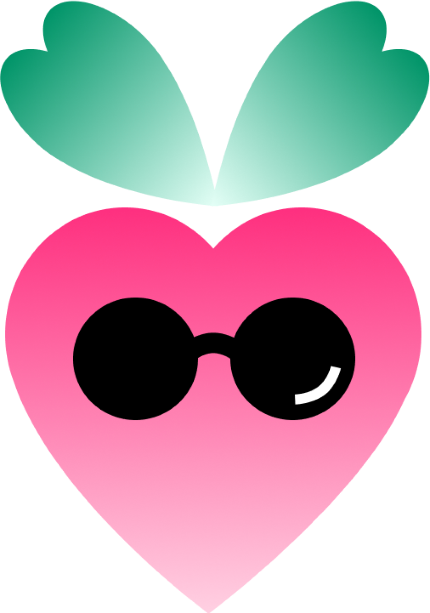

<!DOCTYPE html>
<html lang="en">
    <title>RadCompare</title>
    <link rel="shortcut icon" type="image/png" href="./images/radfavicon.png"/>
    <meta name="viewport" content="width=device-width, initial-scale=1" />
    <link rel="stylesheet" href="about.css" />
    <link rel="preconnect" href="https://fonts.googleapis.com">
    <link rel="preconnect" href="https://fonts.gstatic.com" crossorigin>
    <link href="https://fonts.googleapis.com/css2?family=Outfit:wght@500&family=Poppins&display=swap" rel="stylesheet">
</html>

<body>
    <!-- NAVIGATION MENU -->
    <nav class="navbar">
        <div class="logo">
            <a href="/">
                
            </a>
        </div>
        <ul class="menu">
            <li><a href="/">Home</a></li>
            <li><a href="/">About</a></li>
        </ul>
    </nav>

    <!-- MAIN SECTION -->
    <div class="about-container">
        
        <h1>About</h1>
        <p>RadCompare is a project made at McHacks 10 by
            Alexa, Samer, Liam and Soraya.
        </p>
    </div>


</body>